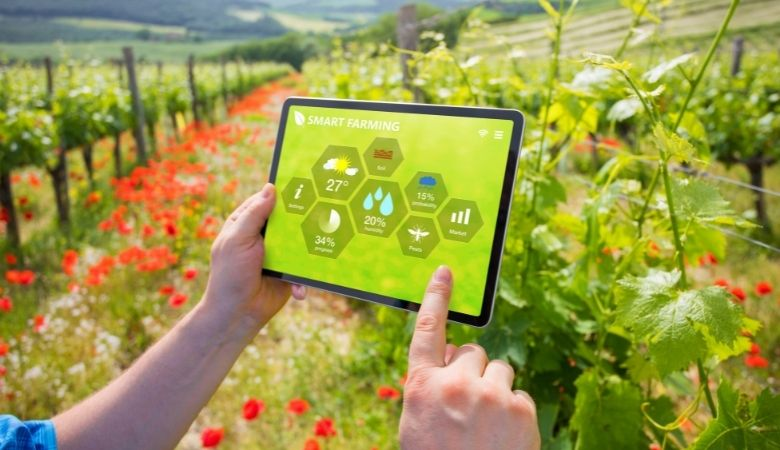
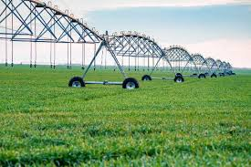

O agronegócio, um dos pilares da economia global, vem passando por uma revolução silenciosa, impulsionada pela tecnologia. Este setor, tradicionalmente associado a métodos agrícolas arcaicos, agora se encontra na vanguarda da inovação, integrando avanços tecnológicos que estão transformando completamente a forma como produzimos alimentos. Essa mudança não apenas aumenta a eficiência e a sustentabilidade das práticas agrícolas, mas também atrai um novo público: os jovens.
Nos últimos anos, a adoção de tecnologias emergentes no agronegócio tem sido impressionante. Drones, sensores de solo, sistemas de irrigação inteligentes, inteligência artificial (IA) e big data são apenas algumas das ferramentas que estão remodelando o setor. Essas tecnologias permitem que os agricultores tomem decisões mais informadas, melhorem a produtividade e minimizem o impacto ambiental. Por exemplo, drones equipados com câmeras e sensores podem monitorar vastas áreas de cultivo em tempo real, identificando problemas como pragas, doenças e deficiências nutricionais antes que se tornem graves. Sistemas de irrigação inteligente, controlados por IA, garantem que as plantas recebam a quantidade exata de água necessária, economizando recursos hídricos e aumentando a eficiência. Além disso, o uso de big data permite que os agricultores analisem padrões e tendências climáticas, melhorando o planejamento das safras e reduzindo o risco de perdas. A robótica também está ganhando espaço, com máquinas capazes de realizar tarefas repetitivas e exaustivas, como a colheita de frutas e legumes, com precisão e rapidez.
A incorporação de tecnologia no agronegócio está tornando o setor mais atraente para os jovens. A geração atual, que cresceu em um mundo digitalizado, encontra um novo fascínio na combinação da agricultura com tecnologia de ponta. Essa convergência oferece oportunidades para que os jovens apliquem seus conhecimentos em ciências da computação, engenharia e análise de dados no campo. O agronegócio moderno requer habilidades em programação, análise de dados, operação de drones e gestão de sistemas automatizados. Essas competências são altamente valorizadas e estão em alta demanda, criando um campo fértil para a inovação e o empreendedorismo. Além disso, muitas startups estão surgindo nesse setor, desenvolvendo soluções tecnológicas inovadoras que abordam problemas específicos da agricultura, desde a produção até a comercialização. Outra atração significativa para os jovens é o impacto positivo que podem ter na sustentabilidade e na segurança alimentar global. Ao trabalhar com tecnologias que promovem práticas agrícolas sustentáveis, os jovens podem contribuir para a preservação do meio ambiente e para a alimentação de uma população mundial crescente. Isso proporciona um sentido de propósito e realização que é extremamente valioso para a nova geração.